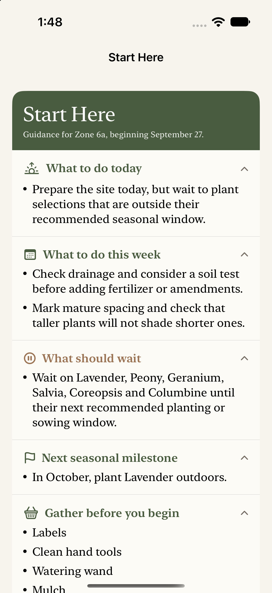

Describe the place
Name the garden and capture the light, soil, bed type, and ZIP code that shape it.
Your Garden, Guided.
Sow & Tend turns your plants, conditions, climate, and timing into practical guidance for the garden you actually have.
Guidance with context
A garden begun today should not begin with a harvest reminder. Sow & Tend starts with where you are—and how you want to begin.
Build a garden around your conditions, then open it to a plan that begins with today—not a generic calendar.
Name the garden and capture the light, soil, bed type, and ZIP code that shape it.
Mix vegetables, fruit, flowers, shrubs, and small trees in the combinations that make sense for you.
Seeds or purchased plants, their size and maturity, and when you want the work to begin.
See what to do today, what should wait, what you need, and the next seasonal milestone.
Inside the app
Each new garden opens with a focused plan for today, this week, and the season ahead—grounded in the plants, place, and starting point you chose.

Beyond planting day
Practical structure when you need it, and room for the observations that only a gardener can make.
Planting, watering, feeding, health checks, pruning, and harvest guidance that reflects when the bed actually began.
Calendar, plan, care, plant health, seasonal progress photos, and notes—organized around each garden.
Suggestions informed by bloom succession, height, spacing, seasonality, and pest resilience.
“Start with what matters today. See what’s next when you’re ready.”
Sow & Tend is being designed for beginners and experienced gardeners alike.
Recommendations explain why something fits, warn when a plant may struggle, and leave the final decision with the gardener.
Growing carefully
We’re building the first iPhone release around reliable plant guidance, useful timing, and the realities of a living garden.
Explore the companion